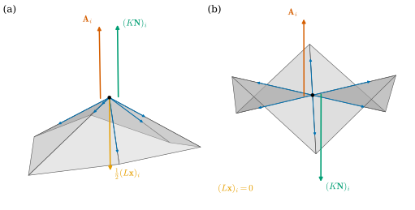
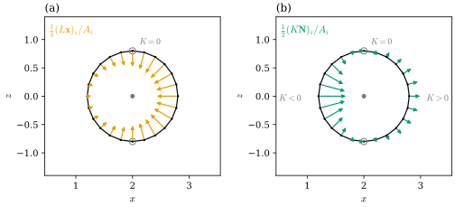

40.3 Curvature Normals
Goals
- area normal \(\mathbf{N}\,dA\), mean curvature normal \(2H\mathbf{N}\,dA\), Gauss curvature normal \(K\mathbf{N}\,dA\)를 \(d\mathbf{x}\)와 \(d\mathbf{N}\)의 wedge로 쓰고, 이 study set의 부호(\(W = -d\mathbf{N}\))로 증명할 수 있다.
- 세 2-form을 vertex의 dual cell 위에서 Stokes's theorem으로 적분해, mean curvature normal에서 cotan formula \((L\mathbf{x})_i\)가, Gauss curvature normal에서 \(\tfrac12\sum_j\theta_{ij}(\mathbf{x}_i - \mathbf{x}_j)/\ell_{ij}\)가 나오는 과정을 따라갈 수 있다.
- \(\Delta\mathbf{x} = 2H\mathbf{N}\)을 유도하고, Laplace–Beltrami operator를 이산화한 \(L\mathbf{x}\)가 Stokes로 얻은 vector와 정확히 같은 이유(dual edge 위의 \(\star d\mathbf{x} = -\mathbf{N}\times d\mathbf{x}\))를 설명할 수 있다.
- 강의 슬라이드와 노트의 식을 이 study set의 부호로 옮길 수 있다.
Prerequisites
- Section 40.1–40.2: angle defect와 Gauss image Proposition 40.1.7, 이 장의 기호(Section 40.1의 Conventions 상자).
- Chapter 38: area normal Proposition 38.3.5, \(\star d\mathbf{x} = -\mathbf{N}\times d\mathbf{x}\) Proposition 38.3.6, vector area Theorem 38.3.11, discrete vector area Definition 38.5.4, Proposition 38.5.5, discrete Laplace–Beltrami operator Definition 38.6.2.
- Chapter 36: dual orientation Remark 36.5.1, circumcentric dual Definition 36.5.6, Lemma 36.5.9, cotan formula Theorem 36.5.10, cotan Laplacian Definition 36.6.6.
- Chapter 39: \(-d\mathbf{N} = d\mathbf{x}\circ\mathsf{W}\) Proposition 39.1.2, \(K = \det\mathsf{W}\), \(H = \tfrac12\tr\mathsf{W}\) (39.3.1), mean curvature vector Proposition 39.3.1, bending angle Definition 39.5.5. Chapter 35: vector-valued form의 wedge Definition 35.5.12, Proposition 35.5.13, Proposition 35.5.16.
Motivation
Section 40.1–40.2는 Gaussian curvature를 vertex마다의 수 \(\delta_i\)로 만들었다. mean curvature는 그렇게 하기 어렵다. \(H\)는 normal의 방향을 바꾸면 부호가 바뀌는데(Proposition 39.3.1), mesh의 vertex에는 normal이 하나로 정해져 있지 않다(Section 38.5). 그러나 vector \(H\mathbf{N}\)은 normal의 선택에 무관했다. 그래서 수 대신 vector를 적분하자. Section 38.5에서 \(\mathbf{N}\,dA\)를 dual cell 위에서 적분해 discrete vector area를 얻었다(Definition 38.5.4). 강의 슬라이드는 \(\mathbf{N}\,dA\)가 surface에 자연스럽게 붙는 세 \(\R^3\)-valued 2-form 가운데 하나라고 말한다 [CMU-DDG L16] slide 20. 나머지 둘이 mean curvature와 Gaussian curvature를 담고, 같은 방법으로 적분하면 cotan formula와 bending angle의 식이 나온다.
Three Curvature Normals
\(\R^3\)-valued 1-form의 wedge는 cross product로 만든다. 1-form끼리는 \((\alpha\wedge\beta)(u, v) = \alpha(u)\times\beta(v) - \alpha(v)\times\beta(u)\)이고, \(\alpha\wedge\beta = \beta\wedge\alpha\)이다((35.5.5), Proposition 35.5.13). immersion \(\mathbf{x}\)와 그 Gauss map \(\mathbf{N}\)에서 만들 수 있는 wedge는 \(d\mathbf{x}\wedge d\mathbf{x}\), \(d\mathbf{x}\wedge d\mathbf{N}\), \(d\mathbf{N}\wedge d\mathbf{N}\)의 셋이다.
Proposition 40.3.1 (three curvature normals). immersion \(\mathbf{x}\colon U \to \R^3\)과 그 Gauss map \(\mathbf{N}\), area form \(dA\)((38.3.5))에 대하여
이다. 여기서 \(H = \tfrac12\tr\mathsf{W}\), \(K = \det\mathsf{W}\)이고 \(-d\mathbf{N} = d\mathbf{x}\circ\mathsf{W}\)이다(Proposition 39.1.2).
Proof idea: 점마다 induced metric에 대한 orthonormal basis를 잡으면 \(d\mathbf{x}\)는 tangent plane의 orthonormal frame이 되고 \(d\mathbf{N}\)은 그 frame에서 행렬 \(-\mathsf{W}\)가 된다. 두 wedge는 그 행렬의 trace와 determinant를 꺼낸다.
Proof. 첫 식은 Proposition 38.3.5다. 점 \(q\)를 고정하고 \((\R^2, g_q)\)의 positively oriented orthonormal basis \((e_1, e_2)\)를 잡자. \(a = d\mathbf{x}(e_1)\), \(b = d\mathbf{x}(e_2)\)는 orthonormal이고 \(a\times b = \mathbf{N}\)이며(Proposition 38.3.6의 증명), \(dA(e_1, e_2) = 1\)이다. \(\mathsf{W}\)의 이 basis에 대한 행렬을 \((w_{kl})\)이라 하면 \(\mathsf{W}e_1 = w_{11}e_1 + w_{21}e_2\), \(\mathsf{W}e_2 = w_{12}e_1 + w_{22}e_2\)이므로 \(d\mathbf{N}(e_1) = -(w_{11}a + w_{21}b)\), \(d\mathbf{N}(e_2) = -(w_{12}a + w_{22}b)\)이다. (35.5.5)에서
\[ \begin{aligned} (d\mathbf{x}\wedge d\mathbf{N})(e_1, e_2) &= a\times d\mathbf{N}(e_2) - b\times d\mathbf{N}(e_1) \\ &= -w_{22}\,a\times b + w_{11}\,b\times a \\ &= -(w_{11} + w_{22})\,\mathbf{N}, \\ (d\mathbf{N}\wedge d\mathbf{N})(e_1, e_2) &= 2\,d\mathbf{N}(e_1)\times d\mathbf{N}(e_2) \\ &= 2(w_{11}w_{22} - w_{21}w_{12})\,\mathbf{N} \end{aligned} \]
이다(\(a\times a = b\times b = 0\)). trace와 determinant는 basis에 무관하므로 \(w_{11} + w_{22} = \tr\mathsf{W} = 2H\), \(w_{11}w_{22} - w_{21}w_{12} = \det\mathsf{W} = K\)이다. \(\R^2\) 위의 2-form은 한 basis에서의 값으로 정해지므로 둘째, 셋째 식이 성립한다.
셋째 식은 Chapter 39가 넓이 비율로 말한 것(Section 39.3, \(\mathbf{N}_u\times\mathbf{N}_v = K\,\mathbf{x}_u\times\mathbf{x}_v\))을 2-form으로 쓴 것이다. \(\tfrac12\,d\mathbf{N}\wedge d\mathbf{N}\)은 Gauss map의 상의 “vector area”이고, 그 크기가 \(\abs{K}\)배의 넓이다. 둘째 식의 \(d\mathbf{x}\wedge d\mathbf{N}\)은 위치와 normal을 섞은 넓이라서, offset의 넓이를 다루는 Section 40.4의 Steiner formula에서 다시 나온다. 강의 슬라이드는 이 셋을 “mixed area”라고 부른다 [CMU-DDG L16] slide 20.
Example 40.3.2 (sphere and cylinder). (a) unit sphere(\(\mathbf{N} = \mathbf{x}\), 바깥쪽)에서는 \(d\mathbf{N} = d\mathbf{x}\)이므로 \(d\mathbf{x}\wedge d\mathbf{N} = d\mathbf{x}\wedge d\mathbf{x} = 2\mathbf{N}\,dA\)이다. (40.3.1)의 둘째 식과 맞대면 \(-2H = 2\), 곧 \(H = -1\)이고, 셋째 식에서 \(K = 1\)이다. (b) 반지름 \(r\)인 cylinder(바깥쪽)에서는 \(d\mathbf{N} = \tfrac1r\mathbf{x}_u\,du\)(Example 39.1.3(b))이므로
\[ \begin{aligned} (d\mathbf{x}\wedge d\mathbf{N})(\partial_u, \partial_v) &= \mathbf{x}_u\times d\mathbf{N}(\partial_v) \\ &\quad - \mathbf{x}_v\times d\mathbf{N}(\partial_u) \\ &= -\tfrac1r\mathbf{x}_v\times\mathbf{x}_u = \tfrac1r\mathbf{x}_u\times\mathbf{x}_v \end{aligned} \]
이다. 이것은 \(-2H\mathbf{N}\,dA(\partial_u, \partial_v)\)에 \(H = -\tfrac{1}{2r}\)을 넣은 값이다. \(d\mathbf{N}\)이 한 방향뿐이라 \(d\mathbf{N}\wedge d\mathbf{N} = 0\), 곧 \(K = 0\)이다.
Verification: verify/v-40-3-curvature-normals.py
Derivation (\(\Delta\mathbf{x} = 2H\mathbf{N}\)). surface 위의 Laplace–Beltrami operator는 함수 \(u\)에 대해 \(d(\star du) = (\Delta u)\,dA\)를 만족한다(\(\Delta = \star d\star d\). 정의는 (42.1.4), Tour의 (0.4.3), Track 3의 Section 21.6). 이것을 \(\mathbf{x}\)의 세 성분에 쓰자. (38.3.7)의 \(\star d\mathbf{x} = -\mathbf{N}\times d\mathbf{x} = -\mathbf{N}\wedge d\mathbf{x}\)(0-form과 1-form의 cross product wedge)에 Proposition 35.5.16, Proposition 35.5.13, (40.3.1)을 차례로 쓰면
이고, 따라서 \(\Delta\mathbf{x} = 2H\mathbf{N}\)이다. 좌표를 쓰지 않은 유도다. conformal coordinates에서 직접 계산해도 같다(Exercise 40.3.3). (40.3.2)가 이 절의 열쇠다. \(\int\Delta\mathbf{x}\,dA\)와 \(\int2H\mathbf{N}\,dA\)는 같은 1-form \(\star d\mathbf{x} = -\mathbf{N}\times d\mathbf{x}\)의 경계 적분이다. 아래에서 보듯 mesh에서도 그렇다.
Integrating over Dual Cells
mesh에서 세 2-form을 점마다 쓸 수는 없다. face 안에서는 \(d\mathbf{N} = 0\)이고 edge와 vertex에서는 \(\mathbf{N}\)이 끊긴다. 그러나 셋 모두 exact다. Proposition 35.5.16과 Proposition 35.5.13에서
\[ \begin{aligned} d\big(\tfrac12\mathbf{x}\wedge d\mathbf{x}\big) &= \tfrac12\,d\mathbf{x}\wedge d\mathbf{x}, \\ d(\mathbf{N}\wedge d\mathbf{x}) &= d\mathbf{x}\wedge d\mathbf{N}, \\ d\big(\tfrac12\mathbf{N}\wedge d\mathbf{N}\big) &= \tfrac12\,d\mathbf{N}\wedge d\mathbf{N} \end{aligned} \]
이다. smooth surface의 영역 \(C\)에서는 Stokes's theorem으로 \(\int_C\) 넓이 적분을 \(\oint_{\partial C}\) 경계 적분으로 바꿀 수 있다(Theorem 38.3.11과 같은 증명). mesh에서는 거꾸로 경계 적분을 정의로 삼는다. vertex \(i\)의 dual cell \(C_i\)의 경계 \(\partial C_i\)는 face 안을 지나고 edge를 한 점에서 가로지르므로, 그 위에서는 \(\mathbf{x}\)와 face normal이 모두 뜻을 가진다. 이 절에서 \(\partial C_i\)는 \(\mathbf{x}_i\) 둘레를 positive orientation(\(\mathbf{N}\) 쪽에서 보아 반시계 방향)으로 돈다. 곧 face \(f = (i, j, k)\) 안에서는 edge \(ij\)의 중점 \(m_{ij}\)에서 dual vertex를 거쳐 \(m_{ik}\)로 간다.
첫째 form은 이미 했다. \(\tfrac12\oint_{\partial C_i}\mathbf{x}\times d\mathbf{x}\)는 경계 polygon의 vector area이고, barycentric cell에서 \(\tfrac13\sum_{f\ni i}A_f\mathbf{N}_f\)인 discrete vector area \(\mathbf{A}_i\)다(Proposition 38.5.5). 강의 슬라이드는 같은 값을 star의 경계(link)로 계산한다 [CMU-DDG L16] slide 22. 이제 둘째 form이다.
Definition 40.3.3 (discrete mean curvature normal). discrete immersion \(\mathbf{x}\)의 vertex \(i\)에서 cotan Laplacian \(L\)(Definition 36.6.6)을 \(\mathbf{x}\)의 세 성분에 쓴
를 \(i\)의 discrete mean curvature normal(이산 평균곡률 법벡터)이라 한다. 이것은 integrated 값이고, 점마다의 값은 dual area로 나눈 \((\Delta_h\mathbf{x})_i = (L\mathbf{x})_i/A_i\)(Definition 38.6.2)다.
이 정의가 \(\int_{C_i}2H\mathbf{N}\,dA\)의 discrete 판이라는 것이 다음 정리다. \(L\) 자체는 Chapter 36에서 이미 정의했다. 여기서 정의하는 것은 그것을 \(\mathbf{x}\)에 쓴 vector에 붙이는 이름과 해석이다.
Theorem 40.3.4 (the mean curvature normal from Stokes). interior vertex \(i\)의 circumcentric dual cell \(C_i\)(Definition 36.5.6)의 경계를 positive orientation으로 돌고, face \(f\)의 조각 \([m_{ij}, c_f]\), \([c_f, m_{ik}]\) 위에서는 \(\mathbf{N} = \mathbf{N}_f\)로 두자(circumcenter \(c_f\)가 \(f\) 밖에 있어도 그렇게 센다). 그러면
이다. 같은 등식이 face마다 \(m_{ij}\)에서 그 face의 평면 안의 경로로 \(m_{ik}\)에 가는 모든 dual cell(barycentric, mixed Voronoi)에서 성립한다.
Proof idea: \(\mathbf{N}\times\)는 face 안에서 \(90^\circ\) 회전이다. dual edge의 두 조각은 edge에 수직이므로 \(\mathbf{N}\times\)로 돌리면 edge에 평행해지고, 그 길이의 합이 dual edge의 길이, 곧 cotan formula다 [CMU-DDG L16] slide 23.
Proof. \(\partial C_i\)를 edge \(ij\) 근처의 두 조각씩 묶는다. edge \(ij\)를 \(i \to j\)로 지나는 face를 \(f = (i, j, k)\), \(j \to i\)로 지나는 face를 \(g\)라 하면, \(\mathbf{x}_i\) 둘레를 positive orientation으로 돌 때 \(g\)에서 \(f\)로 넘어가며 \(m_{ij}\)를 지난다. 그 두 조각 \([c_g, m_{ij}] + [m_{ij}, c_f]\)는 dual edge \(e^\star_{ij}\)이고 방향도 Remark 36.5.1과 같다. Lemma 36.5.9에서 \(c_f - m_{ij}\)는 \(f\)의 평면 안에서 \(e_{ij}\)에 수직이고, 부호 있는 길이가 \(h_{f,ij} = \tfrac{\ell_{ij}}{2}\cot\alpha_{ij}\)(\(\alpha_{ij}\)는 \(f\)의 \(k\)에서의 각)이며, 양의 방향은 \(f\)의 안쪽이다. \(f\)가 edge를 \(i \to j\)로 지나므로 그 안쪽은 \(\mathbf{N}_f\times\hat e_{ij}\) 방향이다. 곧 \(c_f - m_{ij} = h_{f,ij}\,\mathbf{N}_f\times\hat e_{ij}\)이고
\[ \begin{aligned} \mathbf{N}_f\times(c_f - m_{ij}) &= h_{f,ij}\,\mathbf{N}_f\times(\mathbf{N}_f\times\hat e_{ij}) \\ &= -h_{f,ij}\,\hat e_{ij} \end{aligned} \]
이다(\(\hat e_{ij}\perp\mathbf{N}_f\)). \(g\)는 edge를 \(j \to i\)로 지나므로 그 안쪽은 \(-\mathbf{N}_g\times\hat e_{ij}\) 방향이고, \(c_g - m_{ij} = -h_{g,ij}\,\mathbf{N}_g\times\hat e_{ij}\)(\(h_{g,ij} = \tfrac{\ell_{ij}}{2}\cot\beta_{ij}\))이다. 그러면 \(\mathbf{N}_g\times(m_{ij} - c_g) = h_{g,ij}\,\mathbf{N}_g\times(\mathbf{N}_g\times\hat e_{ij})\), 곧 \(-h_{g,ij}\,\hat e_{ij}\)이다. 조각 위에서 \(\mathbf{N}\)이 상수이므로 \(\int\mathbf{N}\times d\mathbf{x}\)는 \(\mathbf{N}\times(\text{끝점} - \text{시작점})\)이고, 두 조각을 더하면
\[ \begin{aligned} \int_{e^\star_{ij}}\mathbf{N}\times d\mathbf{x} &= -(h_{f,ij} + h_{g,ij})\,\hat e_{ij} = -\frac{\abs{e^\star_{ij}}}{\ell_{ij}}\,e_{ij} \\ &= -\tfrac12(\cot\alpha_{ij} + \cot\beta_{ij})\,e_{ij} \end{aligned} \]
이다(Theorem 36.5.10). \(j\)에 대해 더하고 부호를 바꾸면 (40.3.4)이다. 마지막 문장: 조각을 face마다 묶으면, face \(f = (i, j, k)\) 안의 경로의 기여는 \(\mathbf{N}_f\times(m_{ik} - m_{ij}) = \tfrac12\mathbf{N}_f\times(\mathbf{x}_k - \mathbf{x}_j)\)이고, 이것은 경로가 \(f\)의 평면 안에서 어떻게 가든 양 끝점만으로 정해진다. 그러므로 그런 dual cell은 모두 circumcentric cell과 같은 값을 준다.
smooth surface에서는 (40.3.1)과 Stokes's theorem에서 \(-\oint_{\partial C}\mathbf{N}\times d\mathbf{x} = -\int_Cd\mathbf{x}\wedge d\mathbf{N} = \int_C2H\mathbf{N}\,dA\)이다. 그래서 (40.3.4)는 “mesh의 \(\int_{C_i}2H\mathbf{N}\,dA\)”를 smooth와 같은 경계 적분으로 계산한 값이 \((L\mathbf{x})_i\)라는 뜻이다. 증명의 마지막 문장에서, 그 값은 dual cell의 모양에 무관하고 edge의 중점만 본다. dual cell의 선택이 들어오는 곳은 점마다의 값 \((L\mathbf{x})_i/A_i\)의 분모뿐이다. 마지막 식의 \(\tfrac12\mathbf{N}_f\times(\mathbf{x}_k - \mathbf{x}_j)\)는 triangle의 넓이를 \(\mathbf{x}_i\)로 미분한 것과 같은 vector이고, 그래서 \(-(L\mathbf{x})_i\)가 mesh의 넓이의 gradient가 된다. 그 증명은 Theorem 41.2.7의 일이다.
Proposition 40.3.5 (the Laplace–Beltrami route gives the same vector). interior edge \(e = ij\)(\(i \to j\)로 방향을 준다)의 circumcentric dual edge \(e^\star\)(Remark 36.5.1의 방향) 위에서 \(\mathbf{N}\)을 각 조각의 face normal로 두면
\[ (\star_1d_0\mathbf{x})_e = -\int_{e^\star}\mathbf{N}\times d\mathbf{x} \]
이다. 곧 \(\star d\mathbf{x} = -\mathbf{N}\times d\mathbf{x}\)(Proposition 38.3.6)가 mesh의 dual edge 위에서 정확히 성립한다. 따라서 \(\Delta = \star d\star d\)를 DEC로 이산화한 \((L\mathbf{x})_i = (\tilde d_1\star_1d_0\mathbf{x})_i\)(Definition 36.6.6)와 Theorem 40.3.4의 \(-\oint_{\partial C_i}\mathbf{N}\times d\mathbf{x}\)는 같은 vector다.
Proof. 왼쪽은 Definition 36.5.14에서 \(\tfrac12(\cot\alpha_{ij} + \cot\beta_{ij})(\mathbf{x}_j - \mathbf{x}_i)\)이고, 오른쪽은 Theorem 40.3.4의 증명의 마지막 식에 부호를 바꾼 것이다. 둘째 문장: (40.3.2)에서 \(\int_{C_i}\Delta\mathbf{x}\,dA = \oint_{\partial C_i}\star d\mathbf{x}\)를 DEC로 쓰면, \(\star_1d_0\mathbf{x}\)는 dual edge마다 \(\star d\mathbf{x}\)의 적분이고 \(\tilde d_1\)은 그것을 dual cell의 경계를 따라 더한다(discrete Stokes, Proposition 36.5.5). positive orientation의 \(\partial C_i\)는 vertex \(i\)에서 나가는 edge \(i \to j\)의 dual edge를 그 방향대로 지나므로(Theorem 40.3.4의 증명), \((\tilde d_1\star_1d_0\mathbf{x})_i\)는 \(\sum_j\tfrac12(\cot\alpha_{ij} + \cot\beta_{ij})(\mathbf{x}_j - \mathbf{x}_i) = (L\mathbf{x})_i\)이고, 첫 문장에서 이것은 \(-\oint_{\partial C_i}\mathbf{N}\times d\mathbf{x}\)와 같다.
강의 슬라이드는 두 길(Stokes와 Laplace–Beltrami)이 같은 cotan formula에 닿는 것을 “remarkable”한 일로 소개한다 [CMU-DDG L16] slides 23–24, [Cr §5.2.1]. Proposition 40.3.5가 그 이유다. smooth에서 두 적분이 같은 1-form \(\star d\mathbf{x} = -\mathbf{N}\times d\mathbf{x}\)의 경계 적분이었고((40.3.2)), mesh에서도 그 1-form의 dual edge 적분이 두 방법에서 같은 수이기 때문이다.
같은 vector를 bending angle로도 쓸 수 있다. 면마다 묶은 식을 edge마다 다시 묶으면 된다.
Proposition 40.3.6 (edge form of the mean curvature normal). boundary가 없는 discrete immersion의 vertex \(i\)에서 edge \(ij\)의 bending angle을 \(\theta_{ij}\)(Definition 39.5.5), 두 face normal의 이등분 unit vector를 \(\bar{\mathbf{N}}_{ij} = (\mathbf{N}_f + \mathbf{N}_g)/\abs{\mathbf{N}_f + \mathbf{N}_g}\)라 하면
이다. 특히 \((L\mathbf{x})_i\)에는 bending angle이 \(0\)인 edge(flat edge)가 기여하지 않는다.
Proof. Theorem 40.3.4의 증명의 마지막 문장에서
\[ \begin{aligned} -(L\mathbf{x})_i &= \sum_{f\ni i}\tfrac12\mathbf{N}_f\times(\mathbf{x}_k - \mathbf{x}_j) \\ &= \sum_{f\ni i}\big(\tfrac12\mathbf{N}_f\times e_{ik} - \tfrac12\mathbf{N}_f\times e_{ij}\big) \end{aligned} \]
이다(\(f = (i, j, k)\)). edge \(ij\)는 그것을 \(i \to j\)로 지나는 face \(f\)에서 \(-\tfrac12\mathbf{N}_f\times e_{ij}\)로, \(j \to i\)로 지나는 face \(g = (i, l, j)\)에서 \(+\tfrac12\mathbf{N}_g\times e_{ij}\)로 한 번씩 나오므로 \(-(L\mathbf{x})_i = \sum_j\tfrac{\ell_{ij}}{2}(\mathbf{N}_g - \mathbf{N}_f)\times\hat e_{ij}\)이다. Definition 39.5.5에서 \(\mathbf{N}_g = R(\hat e_{ij}, \theta)\mathbf{N}_f\), 곧 \(\mathbf{N}_g = \cos\theta\,\mathbf{N}_f + \sin\theta\,\hat e_{ij}\times\mathbf{N}_f\)(\(\theta = \theta_{ij}\))이다. \(w = \hat e_{ij}\times\mathbf{N}_f\)라 하면 \(\mathbf{N}_f\times\hat e_{ij} = -w\), \(w\times\hat e_{ij} = \mathbf{N}_f\)이므로
\[ \begin{aligned} (\mathbf{N}_g - \mathbf{N}_f)\times\hat e_{ij} &= (1 - \cos\theta)\,w + \sin\theta\,\mathbf{N}_f \\ &= 2\sin\tfrac\theta2\big(\cos\tfrac\theta2\,\mathbf{N}_f + \sin\tfrac\theta2\,w\big) \end{aligned} \]
이다. 괄호는 \(R(\hat e_{ij}, \tfrac\theta2)\mathbf{N}_f\), 곧 \(\mathbf{N}_f\)와 \(\mathbf{N}_g\)의 이등분 unit vector \(\bar{\mathbf{N}}_{ij}\)다(\(\abs\theta \lt \pi\)라 \(\mathbf{N}_f + \mathbf{N}_g \neq 0\)). 더하고 부호를 바꾸면 (40.3.5)이다.
(40.3.5)에서 \(\ell_{ij}\sin(\theta_{ij}/2)\)는 edge 하나가 내는 mean curvature의 크기다. Chapter 32에서 plane curve의 꺾인 vertex가 길이의 gradient로 \(\kappa^B = 2\sin(\theta/2)\)를 냈던 것과 같은 꼴이다(Proposition 32.3.6). Section 40.4의 Steiner formula는 같은 edge에 \(\tfrac12\ell_{ij}\theta_{ij}\)를 준다. curve에서 turning angle \(\kappa^A = \theta\)와 \(\kappa^B\)가 달랐던 것처럼, 두 정의는 \(\theta\)가 작을 때만 같다.
Example 40.3.7 (the running examples).
(a) unit sphere의 icosphere(3)에서 \((L\mathbf{x})_i/A_i + 2\mathbf{x}_i\)의 성분은 모두 절댓값이 \(0.0150\) 이하이다(mixed area. icosphere에는 obtuse triangle이 없어 circumcentric area와 같다). level 1에서는 반올림 오차 수준이고, level 2–4에서 \(0.0284, 0.0150, 0.0076\)으로 준다. 이 수는 Example 38.6.6의 \(\Delta_hz\)와 같은 계산이다. (b) octahedron의 vertex \(e_3\)에서 \((L\mathbf{x})_i = -\tfrac{4}{\sqrt3}e_3\)이다(Exercise 40.3.1). (c) unit cube의 corner \((1, 1, 1)\)에서는 대각선을 어떻게 긋든 \((L\mathbf{x})_i = -(1, 1, 1)\)이다. (40.3.5)에서 대각선은 \(\theta = 0\)이라 빠지고, cube의 edge 셋이 \(\ell\sin\tfrac\pi4\cdot\bar{\mathbf{N}} = \tfrac{1}{\sqrt2}\cdot\tfrac{1}{\sqrt2}(1, 1, 0)\) 등을 주기 때문이다. cotan weight는 대각선의 방향에 따라 바뀌지만 합은 바뀌지 않는다. (d) saddle \(z = x^2 - y^2\)의 grid mesh에서 원점의 \((L\mathbf{x})_i\)는 정확히 \(0\)이다(\(H = 0\)). (e) torus_mesh(2, 0.8, 24, 48)에서 \(H_i = \inner{(L\mathbf{x})_i}{\mathbf{N}_i}/(2A_i)\)(\(\mathbf{N}_i\)는 바깥쪽 area-weighted vertex normal)는 정확한 \(H(u)\)와 \(0.0029\) 안에서 같다(Exercise 40.3.6).
Verification: verify/v-40-3-curvature-normals.py
Non-example 40.3.8 (the uniform Laplacian). cotan weight 대신 이웃의 평균과의 차이 \(\tfrac{1}{\deg i}\sum_j\mathbf{x}_j - \mathbf{x}_i\)(uniform Laplacian, Section 31.3)를 쓰면 mean curvature normal이 되지 않는다. \([0, 1]^2\)의 \(7\times7\) planar grid에서 interior vertex를 \(\pm0.04\)까지 무작위로 옮기면(평면 안에서, seed 2), surface는 평면이라 \(H = 0\)인데 uniform Laplacian은 interior vertex에서 길이가 \(0.057\)까지인 평면 방향의 vector를 준다. \((L\mathbf{x})_i\)는 \(10^{-15}\) 이하로 \(0\)이다. cotan weight가 \(-0.36\)인 edge가 있어도 그렇다(affine 함수를 정확히 재현하는 linear precision, Proposition 36.6.11(b)). uniform weight는 metric을 보지 않으므로, 평평한 mesh의 vertex를 평면 안에서 움직이는 것을 “휘었다”고 잘못 읽는다.
Verification: verify/v-40-3-curvature-normals.py
이제 셋째 form \(\tfrac12d\mathbf{N}\wedge d\mathbf{N} = d(\tfrac12\mathbf{N}\wedge d\mathbf{N})\)이다. \(\mathbf{N}\times d\mathbf{N}\)은 \(\mathbf{N}\)이 변하는 곳에서만 \(0\)이 아니다. \(\partial C_i\)의 face 조각 위에서는 \(\mathbf{N}\)이 상수라 기여가 없고, 모든 기여는 \(\partial C_i\)가 edge를 건너는 점에서 나온다. 그곳에서 \(\mathbf{N}\)이 \(\mathbf{N}_f\)에서 \(\mathbf{N}_g\)로 갑자기 바뀌는데, 그 사이를 Section 38.5처럼 대원 호로 이어 준다(Proposition 38.5.2). edge를 아주 조금 둥글게 깎은 surface의 normal이 지나는 길이다 [CMU-DDG L16] slide 25. mean curvature normal에서는 이 보간이 필요 없었다. 건너는 점에서 \(d\mathbf{x} = 0\)이기 때문이다.
Definition 40.3.9 (discrete Gauss curvature normal). boundary가 없는 discrete immersion의 vertex \(i\)에서
를 \(i\)의 discrete Gauss curvature normal(이산 가우스 곡률 법벡터)이라 한다. integrated 값이고, 점마다의 값은 \((K\mathbf{N})_i/A_i\)다.
Theorem 40.3.10 (the Gauss curvature normal from Stokes). (a) dual cell \(C_i\)의 경계가 face 안을 지나며 각 edge \(ij\)를 한 번 가로지르고, 그 위의 \(\mathbf{N}\)이 face 안에서는 face normal이며 edge를 건널 때 두 face normal을 잇는 짧은 대원 호를 따라간다고 하자. 그러면 \(\tfrac12\oint_{\partial C_i}\mathbf{N}\times d\mathbf{N} = (K\mathbf{N})_i\)이다. (b) \(i\)가 convex vertex(Section 40.1)이면 \((K\mathbf{N})_i = \int_{P_i}u\,dA(u)\)이다. 여기서 \(P_i \subseteq S^2\)는 Gauss image(Proposition 40.1.7)이고 \(u\)는 \(S^2\)의 점이다.
Proof. (a) face 조각 위에서는 \(d\mathbf{N} = 0\)이다. positive orientation으로 \(\mathbf{x}_i\) 둘레를 돌 때 edge \(ij\)에서 \(g\)(\(j \to i\)로 지나는 face)에서 \(f\)(\(i \to j\)로 지나는 face)로 넘어간다(Theorem 40.3.4의 증명). Definition 39.5.5에서 \(\mathbf{N}_g = R(\hat e_{ij}, \theta)\mathbf{N}_f\)이므로 \(\mathbf{N}_f = R(\hat e_{ij}, -\theta)\mathbf{N}_g\)이고, 대원 호는 \(\mathbf{N}(t) = R(\hat e_{ij}, -t)\mathbf{N}_g\), \(t\)는 \(0\)에서 \(\theta\)까지(\(\theta \lt 0\)이면 감소)다. \(\mathbf{N}'(t) = -\hat e_{ij}\times\mathbf{N}(t)\)이고 \(\mathbf{N}\perp\hat e_{ij}\)이므로 \(\mathbf{N}\times\mathbf{N}' = -\mathbf{N}\times(\hat e_{ij}\times\mathbf{N}) = -\hat e_{ij}\)이다. 그러므로 그 호 위의 적분은 \(\int_0^\theta(-\hat e_{ij})\,dt = -\theta_{ij}\hat e_{ij}\)이고, \(j\)에 대해 더해 \(\tfrac12\)을 곱하면 (40.3.6)이다. (b) unit sphere 자체에 (40.3.1)의 셋째 식을 쓰면(\(\mathbf{x} = \mathbf{N} = u\), \(K = 1\)) \(\tfrac12du\wedge du = u\,dA\)이고, \(d(\tfrac12u\wedge du) = \tfrac12du\wedge du\)이다. convex spherical polygon \(P_i\)는 중심 방향의 tangent plane으로의 central projection으로 평면의 convex polygon과 대응하므로 Stokes's theorem을 쓸 수 있고, \(\int_{P_i}u\,dA = \tfrac12\oint_{\partial P_i}u\times du\)이다. Proposition 40.1.7(a)에서 \(\partial P_i\)를 positive orientation으로 도는 것은 \(\mathbf{N}_1 \to \mathbf{N}_2 \to \cdots\)이고, 이것은 (a)에서 \(\partial C_i\)를 따라 \(\mathbf{N}\)이 지나는 길과 같다. 그러므로 두 경계 적분이 같다.
(b)는 Section 40.1과 짝을 이룬다. Gauss image \(P_i\)의 넓이는 angle defect \(\delta_i\)였고, \(P_i\)의 vector area는 Gauss curvature normal이다. smooth surface에서 \(\int_RK\mathbf{N}\,dA\)는 Gauss image의 vector area이고 \(\int_RK\,dA\)는 그 넓이인 것과 같다. vector area의 크기는 넓이보다 작으므로 \(\abs{(K\mathbf{N})_i} \le \delta_i\)이고, \(P_i\)가 작을수록 비가 \(1\)에 가깝다(unit sphere의 icosphere에서 level 1, 4의 최소 비가 \(0.975\), \(0.9995\)).
Example 40.3.11 (Gauss curvature normals).
(a) unit cube의 corner \((1, 1, 1)\)에서 bending angle이 \(\tfrac\pi2\)인 edge 셋의 \(\mathbf{x}_i - \mathbf{x}_j\)가 \(e_1, e_2, e_3\)이고(대각선은 \(\theta = 0\)), \((K\mathbf{N})_i = \tfrac\pi4(1, 1, 1)\)이다. 크기 \(\tfrac{\sqrt3\pi}{4} = 1.360\)은 \(\delta_i = \tfrac\pi2 = 1.571\)보다 작다. 이것은 octant triangle의 vector area \(\int u\,dA\)와 같다(Exercise 40.3.2). (b) unit sphere의 icosphere(level)에서 \((K\mathbf{N})_i/A_i - \mathbf{x}_i\)의 성분의 절댓값의 최댓값은 level 1–4에서 \(0.0527, 0.0174, 0.0064, 0.0028\)이다. (c) Figure 40.1.1의 convex star에서 \((K\mathbf{N})_i = (-0.0109, -0.0020, 0.7777)\)이고 \(\delta_i = 0.8363\)이다. saddle star(saddle_star(0.35))에서는 bending angle이 \(\pm1.0394\)로 번갈아 나오고 \((K\mathbf{N})_i = (0, 0, -1.0301)\)로 아래를 향한다. 이 vertex의 \(\delta_i = -1.0837 \lt 0\)이고 area normal은 위를 향하므로, \(K\mathbf{N}\)이 \(K \lt 0\)일 때 \(\mathbf{N}\)의 반대쪽인 것과 맞는다. (d) saddle grid의 원점에서 \((K\mathbf{N})_i/A_i\)는 \(17\times17\)에서 \(-3.949\,e_3\), \(33\times33\)에서 \(-3.987\,e_3\)으로 \(K\mathbf{N} = -4e_3\)에 다가간다.
Verification: verify/v-40-3-curvature-normals.py
Figure 40.3.1은 세 normal을 한 vertex에서 비교한다. 왼쪽 (a)는 Figure 40.1.1의 convex star다. 가는 파란 화살표 여섯 개가 \(\tfrac12(\cot\alpha_{ij} + \cot\beta_{ij})(\mathbf{x}_j - \mathbf{x}_i)\)이고, 그 합이 주황 화살표 \((L\mathbf{x})_i\)(절반 길이)다. 주황은 아래, 곧 star가 휘어 들어가는 쪽을 향한다. 주홍 \(\mathbf{A}_i\)(vector area)와 초록 \((K\mathbf{N})_i\)는 위를 향한다. 오른쪽 (b)의 saddle star에서는 파란 여섯 개가 대칭으로 상쇄되어 \((L\mathbf{x})_i = 0\)이고, 초록 \((K\mathbf{N})_i\)가 주홍 \(\mathbf{A}_i\)와 반대로 아래를 향한다. mean curvature normal은 normal의 선택에 무관한 “휘어 들어가는 쪽”이고, Gauss curvature normal은 \(K\)의 부호에 따라 normal과 같은 쪽이거나 반대쪽이다.

Figure 40.3.2는 같은 비교를 torus 전체에서 한다. 두 패널 모두 torus_mesh(2, 0.8, 24, 48)의 meridian \(v = 0\) 위의 vertex 24개를 \(xz\) 평면에서 본 것이고, 검은 다각형이 관의 단면이다. 왼쪽 (a)의 주황 화살표 \((L\mathbf{x})_i/A_i\)는 모두 관의 중심(회색 점)을 향한다. 바깥쪽(\(x = 2.8\))에서 길이 \(1.606\), 안쪽(\(x = 1.2\))에서 \(0.422\)이고, 이것은 \(2\abs{H}\)의 \(1.607\), \(0.417\)과 맞는다. 오른쪽 (b)의 초록 화살표 \((K\mathbf{N})_i/A_i\)는 바깥쪽 절반에서 바깥으로, 안쪽 절반에서 안으로 향하고, 꼭대기와 바닥(회색 원, \(K = 0\))에서 \(0\)이 된다. Chapter 39의 Figure 39.3.1에서 \(H\mathbf{N}\)이 방향을 바꾸지 않고 \(K\)가 부호를 바꾸던 것이 mesh에서 그대로 보인다.

torus_mesh(2, 0.8, 24, 48)(face는 바깥쪽)의 meridian \(v = 0\) 위의 vertex 24개에서 (a) 점마다의 mean curvature normal \((L\mathbf{x})_i/A_i\), (b) 점마다의 Gauss curvature normal \((K\mathbf{N})_i/A_i\). \(A_i\)는 mixed area다.
읽는 법: 검은 다각형이 meridian, 회색 점이 관의 중심 \((2, 0)\), 회색 원이 \(K = 0\)인 \(u = \pm\tfrac\pi2\)의 점이다. (a)의 주황 화살표는 실제 길이의 \(\tfrac14\), (b)의 초록 화살표는 \(\tfrac12\)로 그렸다.
볼 것: (a)의 화살표는 모두 중심을 향하고, 정확한 \(2H\mathbf{N}\)(\(H = -\tfrac{R + 2r\cos u}{2r(R + r\cos u)}\), 바깥쪽 \(\mathbf{N}\))과 성분마다 \(0.0085\) 안에서 같다. (b)는 \(u = 0\)에서 바깥으로 \(0.448\)(\(K = 0.446\)), \(u = \pi\)에서 안으로 \(1.030\)(\(K = -1.042\))이고, 정확한 \(K\mathbf{N}\)과 성분마다 \(0.0112\) 안에서 같다.
본문과의 연결: Theorem 40.3.4, Theorem 40.3.10, Example 40.3.7(e). 전체 torus를 돌려 볼 수 있는 interactive version이 있다.Remark 40.3.12 (scalar curvatures from vectors).
vector를 vertex normal \(\mathbf{N}_i\)에 사영하면 scalar curvature가 나온다. \(\inner{(L\mathbf{x})_i}{\mathbf{N}_i}/(2A_i)\)는 \(H_i\)의 한 정의이고(dgdec.mean_curvature), \(\inner{(K\mathbf{N})_i}{\mathbf{N}_i}/A_i\)는 angle defect와 다른 \(K_i\)의 정의다(\(\abs{(K\mathbf{N})_i} \le \delta_i\)이므로 조금 작다). 어느 normal에 사영하느냐에 따라 값과 부호가 달라진다. 여러 정의의 비교는 Section 41.3에서 한다. 세 vector가 volume, area, total mean curvature의 gradient라는 것도 Chapter 41이 증명한다.
Summary
- \(\tfrac12d\mathbf{x}\wedge d\mathbf{x} = \mathbf{N}\,dA\), \(d\mathbf{x}\wedge d\mathbf{N} = -2H\mathbf{N}\,dA\), \(\tfrac12d\mathbf{N}\wedge d\mathbf{N} = K\mathbf{N}\,dA\)이다(Proposition 40.3.1). 여기서 \(\Delta\mathbf{x} = 2H\mathbf{N}\)이 한 줄로 나온다((40.3.2)).
- dual cell의 경계에서 \(-\oint\mathbf{N}\times d\mathbf{x}\)를 계산하면 cotan formula \((L\mathbf{x})_i\)가 나오고, 값은 경계가 edge의 중점을 지나기만 하면 dual cell에 무관하다(Theorem 40.3.4). DEC Laplacian도 같은 값이다(Proposition 40.3.5).
- \((L\mathbf{x})_i = -\sum_j\ell_{ij}\sin(\theta_{ij}/2)\bar{\mathbf{N}}_{ij}\)이고 flat edge는 기여하지 않는다(Proposition 40.3.6).
- normal을 edge에서 대원 호로 이어 \(\tfrac12\oint\mathbf{N}\times d\mathbf{N}\)을 계산하면 \((K\mathbf{N})_i = \tfrac12\sum_j\theta_{ij}(\mathbf{x}_i - \mathbf{x}_j)/\ell_{ij}\)이고, convex vertex에서 이것은 Gauss image의 vector area다(Theorem 40.3.10).
- 이 study set에서 \((L\mathbf{x})_i\)는 볼록한 곳에서 안쪽을 향한다. Crane의 \(\Delta f = 2HN\)은 이 study set의 \(H\)로 읽어야 맞고, slide 25의 \((KN)_i\)는 부호가 반대다(Conventions 상자).
다음 절에서는 전혀 다른 출발점에서 같은 curvature들을 다시 얻는다. surface를 normal 방향으로 \(\varepsilon\)만큼 부풀리면 넓이와 부피가 \(\varepsilon\)의 다항식이 되고(Steiner formula), convex polyhedron을 둥글게 부풀리면 그 다항식의 coefficient에서 bending angle과 angle defect가 나온다.
Exercises
Exercise 40.3.1 ★ octahedron \(\mathbf{x}_m = \pm e_k\)의 vertex \(e_3\)에서 \((L\mathbf{x})_i\)를 (a) (40.3.3), (b) (40.3.5)로 각각 구하여라. (c) \((K\mathbf{N})_i\)를 구하고 \(\delta_i\)와 비교하여라.
Solution
(a) 모든 face가 정삼각형이라 모든 각이 \(\tfrac\pi3\)이고 \(\cot\tfrac\pi3 = \tfrac{1}{\sqrt3}\)이다. 이웃 넷 \(\pm e_1, \pm e_2\)에서 \((L\mathbf{x})_i = \tfrac12\sum_j\tfrac{2}{\sqrt3}(\mathbf{x}_j - e_3)\)이고, 이것은 \(\tfrac{1}{\sqrt3}(0 - 4e_3) = -\tfrac{4}{\sqrt3}e_3 = -2.3094\,e_3\)이다. (b) edge 길이는 \(\sqrt2\), bending angle은 \(\theta = \pi - \arccos(-\tfrac13) = \arccos\tfrac13\)이므로 \(\sin\tfrac\theta2 = \sqrt{(1 - \tfrac13)/2} = \tfrac{1}{\sqrt3}\)이다. edge \(e_3e_1\)의 두 face normal \((1, \pm1, 1)/\sqrt3\)의 이등분은 \((1, 0, 1)/\sqrt2\)이고, 네 edge의 이등분을 더하면 \((0, 0, 4)/\sqrt2\)이다. 따라서 \((L\mathbf{x})_i = -\sqrt2\cdot\tfrac{1}{\sqrt3}\cdot\tfrac{4}{\sqrt2}e_3 = -\tfrac{4}{\sqrt3}e_3\)로 같다. (c) \((K\mathbf{N})_i = \tfrac12\sum_j\tfrac{\theta}{\sqrt2}(e_3 - \mathbf{x}_j)\)이고, 이것은 \(\tfrac{\theta}{2\sqrt2}\cdot4e_3 = \sqrt2\arccos\tfrac13\,e_3 = 1.7408\,e_3\)이다. \(\delta_i = \tfrac{2\pi}{3} = 2.0944\)보다 작다. Gauss image(내각 \(\tfrac{2\pi}{3}\)인 spherical quadrilateral, Example 38.5.3)가 작지 않아서 vector area와 넓이의 차이가 크다.
Exercise 40.3.2 ★ 꼭짓점이 \(e_1, e_2, e_3\)인 octant triangle \(T \subseteq S^2\)에서 \(\int_Tu\,dA(u)\)를 직접 적분해 \(\tfrac\pi4(1, 1, 1)\)임을 보이고, unit cube의 corner의 \((K\mathbf{N})_i\)와 같음을 확인하여라(Theorem 40.3.10(b)).
Solution
sphere의 표준 좌표, 곧 colatitude \(\theta\)와 longitude \(\varphi\)로 \(u = (\sin\theta\cos\varphi, \sin\theta\sin\varphi, \cos\theta)\), \(dA = \sin\theta\,d\theta\,d\varphi\), \(T = \{0 \le \theta, \varphi \le \tfrac\pi2\}\)이다. \(z\) 성분은 \(\int_0^{\pi/2}\!\int_0^{\pi/2}\cos\theta\sin\theta\,d\theta\,d\varphi = \tfrac\pi2\cdot\tfrac12 = \tfrac\pi4\)이고, \(x\) 성분은 \(\int_0^{\pi/2}\cos\varphi\,d\varphi\int_0^{\pi/2}\sin^2\theta\,d\theta = 1\cdot\tfrac\pi4\)이다. 대칭으로 \(y\) 성분도 \(\tfrac\pi4\)이다. cube의 corner \((1, 1, 1)\)에서는 Example 40.3.11(a)의 \(\tfrac12\cdot\tfrac\pi2\cdot(e_1 + e_2 + e_3) = \tfrac\pi4(1, 1, 1)\)이므로 같다.
Exercise 40.3.3 ★★ [Cr §5.2.1 변형] conformal coordinates(\(E = G = e^{2\mu}\), \(F = 0\))에서 Laplace–Beltrami operator는 \(\Delta u = e^{-2\mu}(u_{uu} + u_{vv})\)이다(Proposition 42.1.10(b)). (a) \(\mathbf{x}_{uu} + \mathbf{x}_{vv}\)의 접선 성분이 \(0\)이고 normal 성분이 \(2e^{2\mu}H\)임을 보여 \(\Delta\mathbf{x} = 2H\mathbf{N}\)을 다시 얻어라. (b) Mercator 좌표 \(\mathbf{x}(\varphi, t) = (\operatorname{sech}t\cos\varphi, \operatorname{sech}t\sin\varphi, \tanh t)\)의 unit sphere와 catenoid \((\cosh v\cos u, \cosh v\sin u, v)\)에서 직접 확인하여라.
Solution
(a) \(E = G\), \(F = 0\)을 미분하면 \(\inner{\mathbf{x}_{uu}}{\mathbf{x}_u} = \tfrac12E_u\), \(\inner{\mathbf{x}_{vv}}{\mathbf{x}_u} = F_v - \inner{\mathbf{x}_v}{\mathbf{x}_{uv}} = -\tfrac12G_u\)이므로 \(\inner{\mathbf{x}_{uu} + \mathbf{x}_{vv}}{\mathbf{x}_u} = \tfrac12(E - G)_u = 0\)이고, 같은 방법으로 \(\mathbf{x}_v\)와의 inner product도 \(0\)이다. normal 성분은 \(\inner{\mathbf{x}_{uu} + \mathbf{x}_{vv}}{\mathbf{N}} = L + N\)이고, (39.3.1)에서 \(H = \tfrac{EN + GL}{2EG} = \tfrac{L + N}{2e^{2\mu}}\)이다. 따라서 \(\Delta\mathbf{x} = e^{-2\mu}(L + N)\mathbf{N} = 2H\mathbf{N}\)이다. (b) Mercator: \((\operatorname{sech})'' = \operatorname{sech}(\tanh^2 - \operatorname{sech}^2)\), \((\tanh)'' = -2\operatorname{sech}^2\tanh\)이므로 \(\mathbf{x}_{\varphi\varphi} + \mathbf{x}_{tt} = -2\operatorname{sech}^2t\,\mathbf{x}\)이고, \(e^{2\mu} = \operatorname{sech}^2t\)로 나누면 \(\Delta\mathbf{x} = -2\mathbf{x}\)이다. 바깥쪽 \(\mathbf{N} = \mathbf{x}\), \(H = -1\)에서 \(2H\mathbf{N}\)과 같다. catenoid: \(\mathbf{x}_{uu} = (-\cosh v\cos u, -\cosh v\sin u, 0)\), \(\mathbf{x}_{vv} = (\cosh v\cos u, \cosh v\sin u, 0)\)이라 합이 \(0\)이고, \(H = 0\)(Example 39.3.3)과 맞는다. 이 좌표는 \(E = G = \cosh^2v\), \(F = 0\)인 conformal coordinates다.
Exercise 40.3.4 ★★ (a) 닫힌 mesh에서 \(\sum_i(L\mathbf{x})_i = 0\), \(\sum_i(K\mathbf{N})_i = 0\)임을 보여라. (b) boundary가 없는 compact surface에서 \(\int2H\mathbf{N}\,dA = 0\), \(\int K\mathbf{N}\,dA = 0\)임을 (40.3.1)로 보여라(하나의 parametrization으로 덮을 수 있다고 하거나, 조각의 경계 적분이 상쇄된다고 하자). (c) 닫힌 mesh에서 \(\sum_i\mathbf{A}_i\)는 무엇인가?
Solution
(a) \(\sum_i(L\mathbf{x})_i = \mathbf{1}^{\mathsf T}L\mathbf{x}\)이고 \(L\)은 symmetric이며 \(L\mathbf{1} = 0\)이므로(Proposition 36.6.9(a)) \(\mathbf{1}^{\mathsf T}L = 0\)이다. edge마다 보면 \(w_{ij}(\mathbf{x}_j - \mathbf{x}_i)\)와 \(w_{ij}(\mathbf{x}_i - \mathbf{x}_j)\)가 상쇄된다. \((K\mathbf{N})_i\)도 edge \(ij\)가 \(i\)에 \(\tfrac12\theta_{ij}(\mathbf{x}_i - \mathbf{x}_j)/\ell_{ij}\), \(j\)에 그 반대를 주므로 합이 \(0\)이다. (b) \(2H\mathbf{N}\,dA = -d(\mathbf{N}\wedge d\mathbf{x})\), \(K\mathbf{N}\,dA = d(\tfrac12\mathbf{N}\wedge d\mathbf{N})\)이 exact이므로, Stokes's theorem에서 boundary가 없는 surface 위의 적분은 \(0\)이다(조각으로 나누면 이웃한 조각의 경계 적분이 반대 방향이라 상쇄된다. Corollary 38.3.12와 같은 논증). 앞의 것은 \(\int\Delta\mathbf{x}\,dA = 0\)이기도 하다. (c) \(\sum_i\mathbf{A}_i = \sum_fA_f\mathbf{N}_f = 0\)이다(Proposition 38.5.5(c)). 세 경우 모두 \(\oint_{\partial C_i}\)들이 이웃한 dual cell에서 상쇄된다는 같은 이유다.
Exercise 40.3.5 ★ 참인지 거짓인지 말하고 이유를 써라. (a) 바깥쪽 orientation의 볼록한 mesh에서 \((L\mathbf{x})_i\)는 바깥쪽을 향한다. (b) mesh의 orientation을 뒤집으면 \((K\mathbf{N})_i\)의 부호가 바뀐다. (c) mesh의 orientation을 뒤집으면 \((L\mathbf{x})_i\)의 부호가 바뀐다. (d) 한 정사각형을 대각선으로 나누는 방향을 바꾸면 cube corner의 \((L\mathbf{x})_i\)가 바뀐다.
Solution
(a) 거짓. \((L\mathbf{x})_i \approx 2H\mathbf{N}A_i\)이고 바깥쪽 \(\mathbf{N}\)의 볼록한 곳에서 \(H \lt 0\)이라 안쪽을 향한다(Conventions 상자, unit sphere에서 \(\approx -2\mathbf{x}_iA_i\)). (b) 참. orientation을 뒤집으면 모든 bending angle의 부호가 바뀌고(Proposition 39.5.6(c)) \(\ell_{ij}\)와 \(\mathbf{x}\)는 그대로이므로 \((K\mathbf{N})_i\)가 \(-(K\mathbf{N})_i\)가 된다. \(K\)는 그대로이고 \(\mathbf{N}\)이 뒤집힌 것과 맞는다. (c) 거짓. cotan weight는 각만으로 정해지므로(Proposition 38.6.1) \((L\mathbf{x})_i\)는 orientation에 무관하다. smooth의 \(H\mathbf{N}\)이 normal의 선택에 무관한 것(Proposition 39.3.1)과 같다. (d) 거짓. 개별 cotan weight는 바뀌지만, (40.3.5)에서 대각선은 flat edge라 기여가 없고 cube의 edge의 \(\ell\), \(\theta\), \(\bar{\mathbf{N}}\)은 그대로다(Example 40.3.7(c)).
Exercise 40.3.6 ★
Coding. Implementation 상자의 curvature_normals로 torus_mesh(2, 0.8, 24, 48)에서 \(H_i = \inner{(L\mathbf{x})_i}{\mathbf{N}_i}/(2A_i)\)와 \(\inner{(K\mathbf{N})_i}{\mathbf{N}_i}/A_i\)(\(\mathbf{N}_i\)는 바깥쪽 area-weighted vertex normal, \(A_i\)는 mixed area)를 구해 정확한 \(H\), \(K\)와 비교하여라. \(\delta_i/A_i\)와도 비교하고, \((L\mathbf{x})_i\)의 접선 성분의 비율의 최댓값을 구하여라.
Solution
V, F = dm.torus_mesh(2, 0.8, 24, 48)
An, Lx, KN = curvature_normals(V, F)
A, N = dm.mass_voronoi(V, F), dm.vertex_normals(V, F, kind="area") # outward unit vertex normals
u = np.arctan2(V[:, 2], np.linalg.norm(V[:, :2], axis=1) - 2)
H_exact = -(2 + 1.6 * np.cos(u)) / (1.6 * (2 + 0.8 * np.cos(u))) # outward N
K_exact = np.cos(u) / (0.8 * (2 + 0.8 * np.cos(u)))
H = np.sum(Lx * N, 1) / (2 * A) # (L x)_i ~ 2 H N A_i
KG = np.sum(KN * N, 1) / A # (K N)_i ~ K N A_i
print(f"max |H_i - H| = {np.abs(H - H_exact).max():.4f}, H in [{H.min():.4f}, {H.max():.4f}]")
print(f"max |<(K N)_i, N_i> / A_i - K| = {np.abs(KG - K_exact).max():.4f}, max |delta_i / A_i - K| = "
f"{np.abs(dm.angle_defect(V, F) / A - K_exact).max():.4f}")
print(f"tangential part of (L x)_i at most {np.abs(np.linalg.norm(np.cross(Lx, N), axis=1) / np.linalg.norm(Lx, axis=1)).max():.4f}")
max |H_i - H| = 0.0029, H in [-0.8029, -0.2112]
max |<(K N)_i, N_i> / A_i - K| = 0.0112, max |delta_i / A_i - K| = 0.0075
tangential part of (L x)_i at most 0.0075바깥쪽 normal에서 정확한 \(H\)는 바깥 적도의 \(-0.8036\)부터 안쪽 적도의 \(-0.2083\)까지이고, \(H_i\)는 그 범위를 \(0.0029\) 안에서 따라간다. Gaussian curvature는 두 정의가 모두 \(0.01\) 수준이고 이 mesh에서는 angle defect가 조금 더 정확하다. \((L\mathbf{x})_i\)는 vertex normal과 거의 평행하지만 크기의 \(0.75\%\)까지 접선 성분이 있다. 이 접선 성분 때문에 \((L\mathbf{x})_i\)를 \(\mathbf{N}_i\)에 사영하는 방법과 \(\abs{(L\mathbf{x})_i}\)를 쓰는 방법은 조금 다른 \(H_i\)를 준다(Remark 40.3.12).